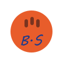

A native Android bowling scorekeeper built with Jetpack Compose
Real-time running totals with proper strike and spare bonus logic. No more mental math.
Tap individual pins to knock them down. Visual feedback for every roll.
Deep dive into your game with strike rates, spare conversions, and averages per game.
Automatically flags splits after the first ball, helping you track difficult conversions.
All your games are persisted locally. Review your progress and beat your high scores.
Full support for those crucial bonus rolls in the final frame.
Head to the 'Sessions' tab to begin. Choose a quick pick like 'League' or 'Practice', or enter a custom name. A session must be active to start scoring games.
Tap 'START GAME' in an active session. Tap pins to select them and hit 'Roll', or use 'Strike', 'Spare', or 'Missed' for one-tap entry.
The 'Stats' tab provides a deep dive into your performance. Track your strike rate, spare and split conversions, and open frame percentage.
Standard bowling pin layout supported by our engine:
Bit mask technology for high-performance scoring logic.